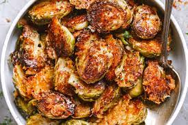

Roasted Brussel Sprouts with Parmesian Recipe!

Description
Balsamic vinegar adds a punch of flavor to these east roasted Brussel sprouts, while the Parmesan provides a melty, cheesy finish.
Ingredients
- 16 ounce package of Brussel sprouts, trimmed and halved
- 2 tbsps olive oil
- 1 tsp garlic powder
- 1 tsp ground black pepper
- 1/2 tsp salt
- 1 tbsp balsamic vinegar
- 1/4 cup grates Parmesan cheese
- 1 pinch red pepper flakes or to taste
Steps
- Preheat the oven to 400 degrees F (200 degrees C).
- Toss Brussel sprouts with olive oil, garlic powder, black pepper and salt. Spread onto 9X13-inch baking pan.
- Roast in the preheated oven, shaking every 5 minutes, until crispy and fork-tender, about 20 minutes. Toss with balsamic vinegar and sprinkle with Parmesan. Continue roasting until melted, about 1 minute more. Sprinkle with red pepper.